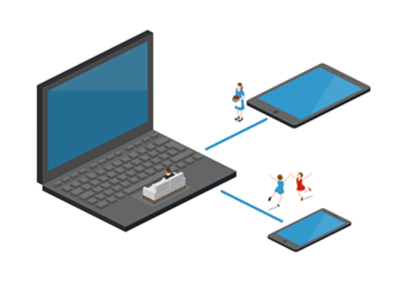

Tipos de redes e topologia
Tipos de Rede
PAN Personal Area Network

CAN Controller Area Network
LAN Local Area Network (infinitas)
MAN Metropolitan Area Network (como TIM, VIVO, etc. Há inúmeras)
WAN Wide Area Network (interconexões de MAN, apenas uma)
Protocolos
Modelo OSI
O modelo OSI (Open Systems Interconnection) é uma referência para a arquitetura de rede que divide as funções em sete camadas. Cada camada é responsável por uma função específica, como controle de acesso ao meio físico, roteamento de dados e gerenciamento de sessões
Aplicação
Passe o mouse para saber mais
É a camada mais alta do modelo OSI e lida com a interação direta com os aplicativos e serviços do usuário final.
Apresentação
Passe o mouse para saber mais
Essa camada é responsável pela formatação, criptografia e compressão dos dados.
Sessão
Passe o mouse para saber mais
A camada de sessão estabelece, mantém e encerra sessões entre os dispositivos de comunicação. Gerencia o diálogo entre aplicativos e coordena a troca de dados.
Transporte
Passe o mouse para saber mais
É responsável pela transferência confiável de dados de um dispositivo para outro.
Segmenta e reagrupa os dados em pacotes e garante a entrega dos pacotes na ordem correta, sem perdas ou corrupção.
Segmenta e reagrupa os dados em pacotes e garante a entrega dos pacotes na ordem correta, sem perdas ou corrupção.
Rede
Passe o mouse para saber mais
Essa camada lida com o roteamento dos dados através de uma rede. Ela seleciona o caminho mais adequado para enviar os pacotes do remetente para o destinatário.
Enlace
Passe o mouse para saber mais
É responsável pela transferência confiável de dados em uma rede, define protocolos para controle de acesso ao meio, detecção e correção de erros, bem como endereçamento físico dos dispositivos.
Física
Passe o mouse para saber mais
É a camada mais baixa do modelo OSI e trata da transmissão física dos dados através do meio de comunicação, como cabos de cobre, fibra ótica ou ondas de rádio.